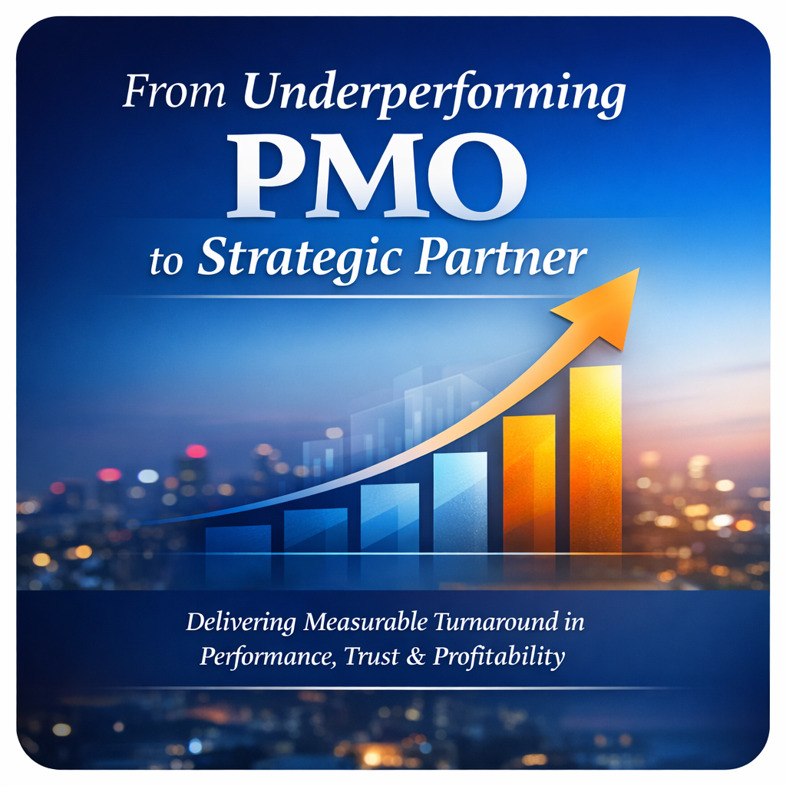

Stakeholder Transformation Playbook
How Leaders Build Trust, Alignment & Delivery Momentum
Read the full article on LinkedIn Download the Playbook (PDF)Leadership, delivery excellence, and transformation thinking.
How Leaders Build Trust, Alignment & Delivery Momentum
Read the full article on LinkedIn Download the Playbook (PDF)
Delivering measurable turnaround in performance, trust, and profitability.
Read more
Understanding the behavioural patterns behind programme friction.
Read moreGet clarity, alignment, and predictable delivery.
Get in touch